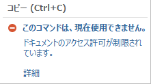
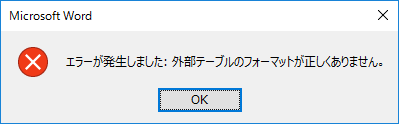

(※ 2016 年 8 月 15 日に Japan Office Support Blog に公開した情報のアーカイブです。)
こんにちは、日本マイクロソフト Office サポート チーム鈴木です。
今回は、IRM 暗号化ファイルを Office で利用する際に制限される機能についてご案内します。
なお、 本記事は公開時点の情報のため、今後動作が変更される可能性があります。
目次
1.IRM の概要
2.制限される機能
3.外部の Office アプリケーションから IRM 暗号化ファイルの呼び出し
1. IRM の概要
Azure Rights Management および Active Directory Rights Management は、ドキュメント レベルの情報保護テクノロジです。
Office は、IRM (Information Rights Management) 機能によって、ドキュメントの暗号化および復号化を行います。
IRM 機能により、例えば以下のような暗号化が実現できます。
作成者は指定したユーザーにのみドキュメントの閲覧/変更権限を付与できます。
Server の権利ポリシーテンプレートにて、細かい権限の付与が可能です。
タイトル : Office 2013 で Information Rights Management を計画する
URL : https://technet.microsoft.com/ja-jp/library/cc179103.aspx
2. 制限される機能
IRM 暗号化ファイルを Office で利用すると、保有する権限により使用が制限される機能があります。
例えば、フル コントロール権限を保有しないユーザーは、編集を含むすべての権限を保有する場合も、以下の機能の使用が制限されます。
以下は一例となります。
- Word の変更履歴
- Excel のブックの共有
- Excel のシートの保護、ブックの保護
- PDF 形式での保存
制限される機能は、保有する権限により異なります。例えば、“コピー” 権限を持たないユーザーは、Excel のフィルター機能の使用が制限されます。
権限による機能の利用可否を確認するには、Office アプリケーションのリボンから判断します。
機能が制限されている場合は、リボンアイコンがグレーアウトされる、またはマウスオーバーにて “ドキュメントのアクセス許可が制限されています。” と表示されます。
以下はコピー権限を持たないユーザーでの例です。

3. 外部の Office アプリケーションから IRM 暗号化ファイルの呼び出し
外部の Office アプリケーションから IRM 暗号化ファイルを呼び出す際に、エラーとなり接続が制限されます。
例えば、Word で、差し込み文書を作成時に、IRM 暗号化の Excel ファイルを元データとして参照する場合には差し込みが行えません。
以下のメッセージが表示されます。

これは、他のアプリケーションが Excel ファイルを参照してデータの読み書きを実施する場合、Excel を起動することなく Excel ISAM ドライバというモジュールを介した処理が行われますが、IRM やパスワードで暗号化/保護された Excel を開く場合には、セキュリティの観点から、利用することを許容していないための動作です。
差し込みを行うには、予め元データとして参照するファイルを開いた状態で指定します。
本情報の内容（添付文書、リンク先などを含む）は、作成日時点でのものであり、予告なく変更される場合があります。